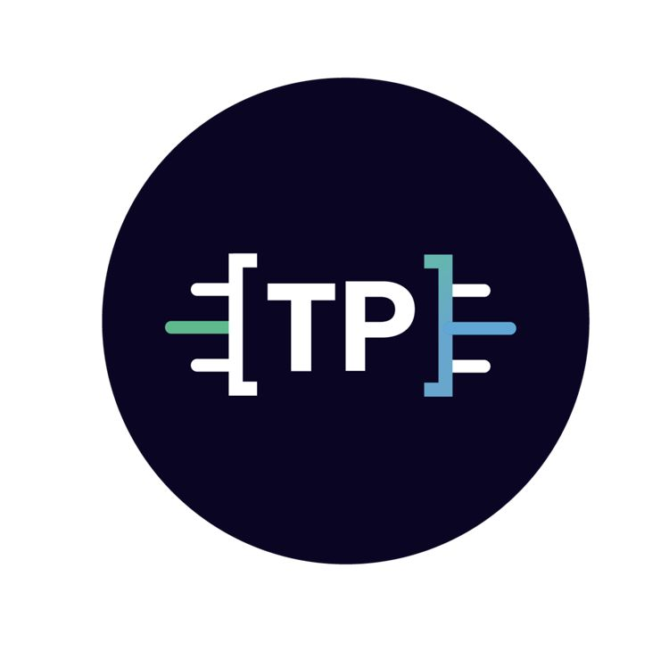

Vingroup AI Engineer Training Program, VinBigData, VinGroup
July 2024 - Now.
AI Engineer
Training in cores subjects of AI: Math, Machine Learning, Deep Learning, Computer Vision, Natural Language Processing, MLOPs, Data Engineering, AI Ethics.

THINKPROMPT CO., LTD
17 July 2023 - Now.
Junior Data Scientist, Lead Project
Research in Machine Learning Modeling, MLOPs, Data Engineering.
 orcid.org/0009-0007-4278-149X
orcid.org/0009-0007-4278-149X